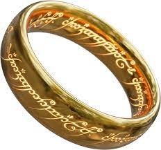

A major theme in our book "the Great Covid Panic" (now also on Kindle!) is how a whole layer of politicians, medical advisers, and opportunistic business people grabbed the opportunity for more power and money during the lockdowns of 2020-2021. We detail how they did it and what the effects were on their society. The tilt towards authoritarianism happened nearly all over the world to varying degrees, but nowhere more obviously than in Australia. Just last week, for instance, parliament passed a bill allowing the police to access and change any online communication (email, facebook, Troppo) that Australians engage in. That bill is symptomatic of a grab for power under the cloak of fear, which of course will mean a transfer of resources from poor to powerful. In Victoria one can think of Brett Sutton as an exemplar of someone seduced by power, whilst people like Fauci and Witty come to mind in the US and the UK, both sitting on top of rapidly expanding empires like the CDC in the US that even tried to grab power over housing (curtailed by the Supreme Court).In this post I want to talk about something not in the book: the tragedy of these power-grabbers themselves. What do our greatest pieces of art say about what is in stall for those seduced by power? The Tragedy of Faust of course is exactly on the topic of how seductive power is and what it costs those who succumb to it. The Game of Thrones story-arc of Daenerys was also on that theme of how someone good became someone bad as fame went to her head.
The reasons for why and how power corrupts are directly related to evolution. A more powerful man or woman is better able to provide for their children. This makes them more attractive mates. So it makes evolutionary sense to want power, to mate with power, and to espouse its benefits to the offspring. Power brings respect, fame, and sexual attention. What is not to like, one might think?
As Lord Acton said, power corrupts and absolute power corrupts absolutely. What Lord Acton also said was that as a result nearly all 'great men' in history were bad men, a lesson seldom told in history classrooms for the obvious reason that power is celebrated and fawned over in our culture, so we don't want to hear the bit about its corruption, preferring to believe we and our favourite leaders are immune. That blindness too makes perfect evolutionary sense because an awareness of the loss that comes with power diminishes how hard we fight for it. It is only in great art that this most unwelcome lesson is truly allowed to come out in full force.
The Lord of the Rings saga perfectly reflects the thinking of Lord Acton. The ring of power corrupts everyone in it, with no exceptions. Frodo, the hero of the saga, is the most immune to the influence of the ring. He is physically weak, simple, loves nature, loves his people, and only takes the ring at the request of others, in order to destroy it. How noble can one get!? Yet even Frodo gets seduced by the ring as he cannot bring himself to part with it when it matters. It is only in the competition with someone else who wants the ring that the ring gets destroyed.
Even though it cost him dearly, Frodo still somewhat yearns for the ring years after it was destroyed, just like Bilbo still yearns to wear the ring over 50 years after losing it. The saga of the Lord of the Rings is thus a study in the universal corruption of power and how those who have had it will keep dreaming of regaining it, whatever their personal loss due to power has been. It is a very sobering tale, depicting power as a kind of all-consuming corrupting drug that never quite gets washed away with time. Some versions of the Faust saga are also of this ilk. A never ending hunger for power is thus one of the prices paid by those seduced by it.
The Lord of the Rings is a cautionary tale for another reason, which is that it lays out in extreme detail what the cost is to those seduced by power: in his quest Frodo gradually loses the ability to connect with the good things in life, such as memories of strawberries and fields, friendship and song. The ring of power starts to be his only reality and only joy. This is a lesson I myself examined at length in my book on love and power of 2013: how power makes one dismissive of the 'small things' in life and how it costs the powerful the ability to love others. They end up only loving themselves and what is needed to be powerful (the ring). In this way, power makes someone's inner world smaller and reduces its joys. There is the loss of wonder and awe, replaced by 'more me'.
It is not a choice I recommend for myself or those I love, nor a choice Tolkien recommended. Power might be seductive and impossible to resist indefinitely, but that does not make it a suitable or desirable goal of life. Power thus costs those seduced by it the things that make life most worthwhile: the ability to experience wonder and love.
This is the tragedy that I think has befallen Sutton, Witty, Fauci, and thousands of similar people in the world the last two years. 'We' have been their victims, but 'they' have also been let down by us in that we did not protect them from this temptation. We did not structure the institutions around them such as to prevent them falling prey like they have, and as everyone would have eventually fallen prey. As I said in my March 2020 lament for the victims that I knew were going to come "Forgive the doom-sayers, the bullies, and the health advisers. They know not what they have done." They least of all know the tragedy to themselves.
I imagine the real test will be to what extent various laws get taken back (or perhaps for preextant ones not used inappropriatly) and the people currently in the limelight disappear. Perhaps some of the players are just having their 15 minutes of fame, or perhaps they are just power crazies.
Thanks Paul. Noble ideas expressed in beautiful language. I listen to the Ring Cycle maybe once or twice a year. Apart from Brunnhilde, the most sympathetic characters are the couple, Sieglinde and Sigmund, caught up in the affairs of the Gods. I find it hard to forgive Fauci and the politicians who have swallowed his nonsense and even harder to overlook the role of people in my old trade of the media who are fear-mongering propagandists.
As far as I can see, the only Australian reporter covering the Covid story professionally is Rebecca Weisser in The Spectator. Ramesh Thakur also writes there. So do the usual suspects and a few of the old Colonel Blimps from the UK, who are amusing in small doses. As a left-of-centre type of gent it did not occur to me that I would be reading a Tory weekly but I look forward to its appearance on the newagency shelves.
The rise and rise of the power-addicted in Australia over the last 18 months has long left me so disgusted I no longer wonder about deliverance in those few years I may have left.
A perfect storm ...
a) growth of Silicon Valley "social media" trackers (where you are the product) which now enables authority to mandate constant tracking, and then enforced by police thugs. I have refused to use an ApplePoddie or a GoogleBottie for exactly that reason (I've used a Windows 6.5 phone for a decade, works perfectly without tracking) but now this in the process of mandated enforcement. I despise "Social Media" but will be forced to pay for it anyway
b) a pandemic that scares most of the population witless, aggravated by yapping "essential" journos using covid-porn clickbait as a business model
c) a National Cabinet deliberately organised to avoid accountability; State Parliaments closed for the same reason; specific Public Health Orders issued on request of senior police thugs; bureaucratic medicos screechily enforcing hysteria and refusing to release unexpurgated "advice"; the advent of dobber Karens (this beyond vomitous)
d) the utter cynicism of permitting football players plus entourages to move across borders (bread and circuses to keep the hoi polloi distracted); high profile film stars moving in and out of the country (because the politicos/medicos satisfy their power vanity by meeting them) - but families with normally unbearable crises are callously ripped and torn because exceptions cannot be made
Now police thugs may alter any or all of electronic communications (including this comment). Such alterations may then be labelled as "offensive, inciteful, criminal" and under a High Court decision made public this week pf here would be charged and fined. It's no use telling me this couldn't happen - it's the exact aim of these various political and legal events. The great unwashed must be controlled. Prohibiting them from speaking is a critical part of method.
It's no use telling me that the power-addicted are short-lived. Perhaps, but there are always eager replacements in the wings, equally repulsive. It's no use telling me I should feel sympathy for the loss of soul afflicting the power-addicted ... instead I pray to Valhalla nightly that the Norse Gods will do as they may metaphorically with such people.
Hi Ian,
I know exactly how you feel. As Sanjeev said in our book, the victory of evil has been a comprehensive rout. A bit of Viking steel in one's reaction to this is healthy. Also, I really am quite optimistic about the long run. What seems an impregnable coalition that is strangling the life out of our society is actually quite brittle.
Apart from simply being humanistic, there is also a strategic point in seeing the human tragedy on their side. Understanding their motives points the way to how we should redesign our societies, precisely because there is no shortage of others who would have done just the same in their place. Also, who appears an enemy today might turn into an ally tomorrow: a golden rule in a conflict is to only declare someone an implacable enemy if one really has to. By isolating the enemy one needs to have, one allows the more marginal hangers-on the opportunity to switch sides.